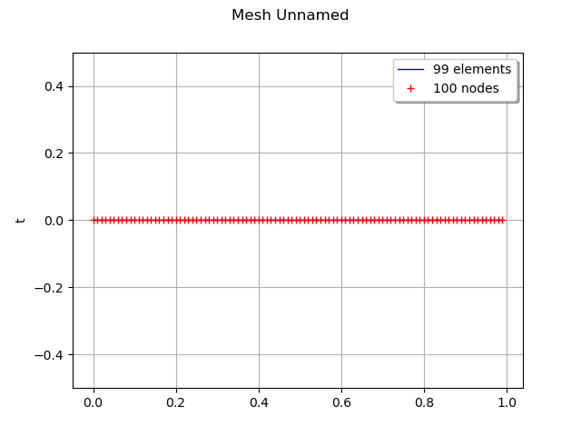
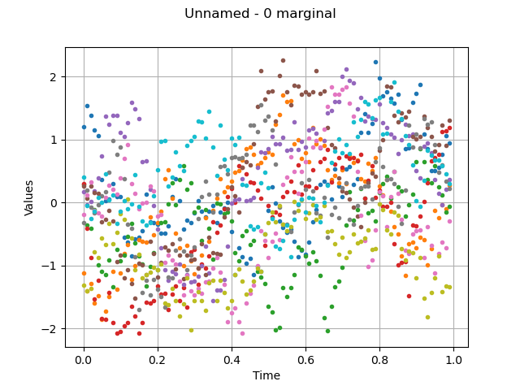
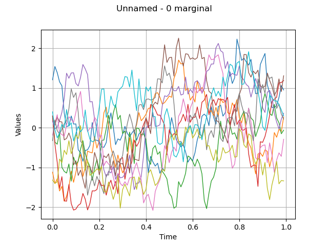
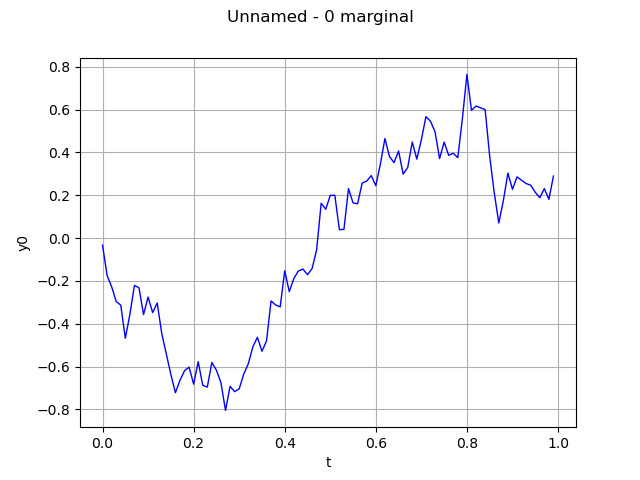
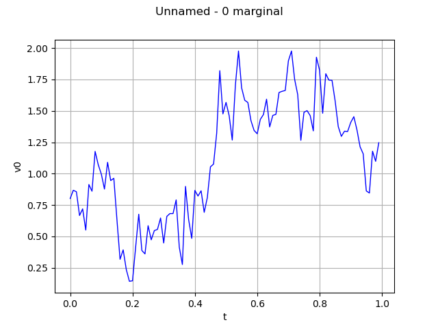

Note
Click here to download the full example code
Process sample manipulation¶
# sphinx_gallery_thumbnail_number = 2
The objective here is to create and manipulate a process sample. A process sample is a collection of fields which share the same mesh  .
.
A process sample can be obtained as  realizations of a multivariate stochastic process
realizations of a multivariate stochastic process  of dimension
of dimension  where
where  , when the realizations are discretized on the same mesh
, when the realizations are discretized on the same mesh  of
of  . The values
. The values  of the field
of the field  are defined by:
are defined by:
![\forall i \in [0, N-1],\quad \underline{x}_i= X(\omega_k)(\underline{t}_i)](../../_images/math/4316d6a1058cc3aace7452c80e990f06e17d78e8.svg)
from __future__ import print_function
import openturns as ot
import openturns.viewer as viewer
from matplotlib import pylab as plt
import math as m
ot.Log.Show(ot.Log.NONE)
First, define a regular 2-d mesh
discretization = [10, 5]
mesher = ot.IntervalMesher(discretization)
lowerBound = [0.0, 0.0]
upperBound = [2.0, 1.0]
interval = ot.Interval(lowerBound, upperBound)
mesh = mesher.build(interval)
mesh = ot.RegularGrid(0.0, 0.01, 100)
graph = mesh.draw()
view = viewer.View(graph)

Allocate a process sample from a field
field = ot.Field()
sampleSize = 10
processSample = ot.ProcessSample(sampleSize, field)
#field.draw()
Create a process sample as realizations of a process
amplitude = [1.0]
scale = [0.2]*1
myCovModel = ot.ExponentialModel(scale, amplitude)
myProcess = ot.GaussianProcess(myCovModel, mesh)
processSample = myProcess.getSample(10)
#processSample
draw the sample, without interpolation
graph = processSample.drawMarginal(0, False)
view = viewer.View(graph)

draw the sample, with interpolation
graph = processSample.drawMarginal(0)
view = viewer.View(graph)

Compute the mean of the process sample The result is a field
graph = processSample.computeMean().drawMarginal()
view = viewer.View(graph)

Draw the quantile field
graph = processSample.computeQuantilePerComponent(0.9).drawMarginal(0)
view = viewer.View(graph)

Draw the field with interpolation
graph = processSample.drawMarginal(0)
view = viewer.View(graph)

processSample
plt.show()
Total running time of the script: ( 0 minutes 0.565 seconds)